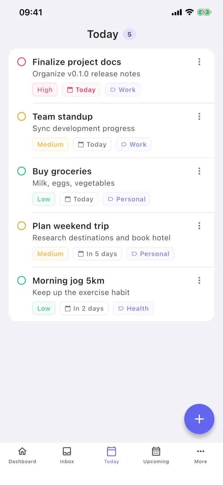
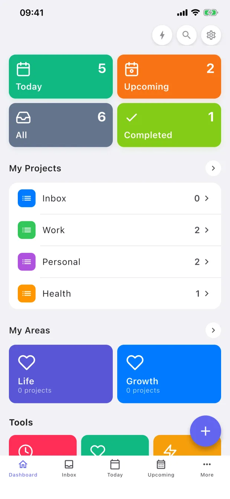
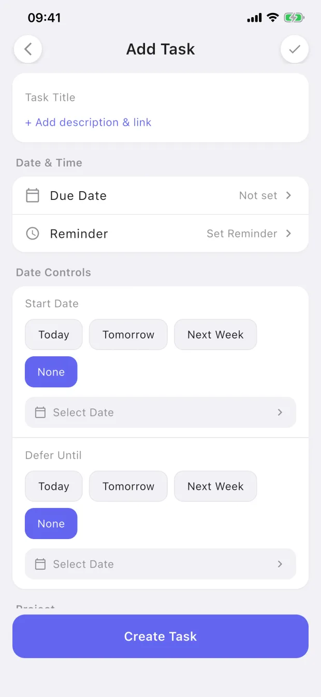

01
One App
Tasks, projects, areas, tags, reminders, and future views share the same underlying model instead of living in separate systems.
XdoList is a task manager built on one unified task model, with multiple workflow styles and composable views.
Free on the App Store · Local-first · Anonymous usage analytics only



XdoList keeps every task in one unified task model, then lets you switch workflow styles and compose the views that fit how you already work.
Tasks, projects, areas, tags, reminders, and future views share the same underlying model instead of living in separate systems.
Start with XdoList, Simple List, Elegant Flow, Quick Capture, Pro GTD, Calendar Timeline, or a Custom Pack without changing apps.
Keep your familiar workflow, then add Today, Calendar, Review, Filter, Timeline, and other views as your system grows.
Most task apps ask you to learn their method. XdoList is built around workflow packs, so you can keep the mental model you already trust, or shape your own setup with Custom Pack.
Workflow packs are inspired by familiar task-management patterns. Product names and trademarks belong to their respective owners; XdoList is not affiliated with or endorsed by them.
Under the flexible workflow system, the daily loop still stays fast: capture, plan, complete, and get reminded.
Open and start using instantly. No registration, no waiting for sync. Start managing your tasks right away.
All data is stored locally, never uploaded to our servers. Your tasks belong only to you, we cannot even view them.
Custom tags, color markers, and priority settings keep even complex projects organized.
Local reminders delivered on time. Supports one-time, daily, weekly, monthly, and yearly recurring reminders.
Break big tasks into smaller steps. Add, complete, and manage subtasks directly inside any task.
Supports automatic light/dark mode switching. Protects your eyes and provides a more comfortable experience at night.
XdoList keeps your tasks, tags, reminders, and subtasks in a local app database. There is no account requirement and no default cloud sync server receiving your personal plans.
Free on the App Store · No sign-up · Works offline
Everything you might want to know before you download.
Yes. Tasks, tags, and reminders live in a local database inside the app. The app may send anonymous usage events (like "task created") via Firebase Analytics, but never your task content. Website analytics is optional and separate.
No. Open the app and start typing. There is no signup, no email verification, no password to forget.
Yes. All core features work without internet: capture, organize, complete, reminders. You only need a connection for the App Store download itself.
Not in this version. XdoList is intentionally a single-device app. If we add sync later, it will be opt-in and end-to-end encrypted.
Local notifications scheduled by iOS. Recurring rules (daily, weekly, monthly, yearly) are supported. Reminders never leave your device.
Yes. The full app is free, with no ads and no upsells blocking basic features. The app collects only anonymous usage events—never your task content.